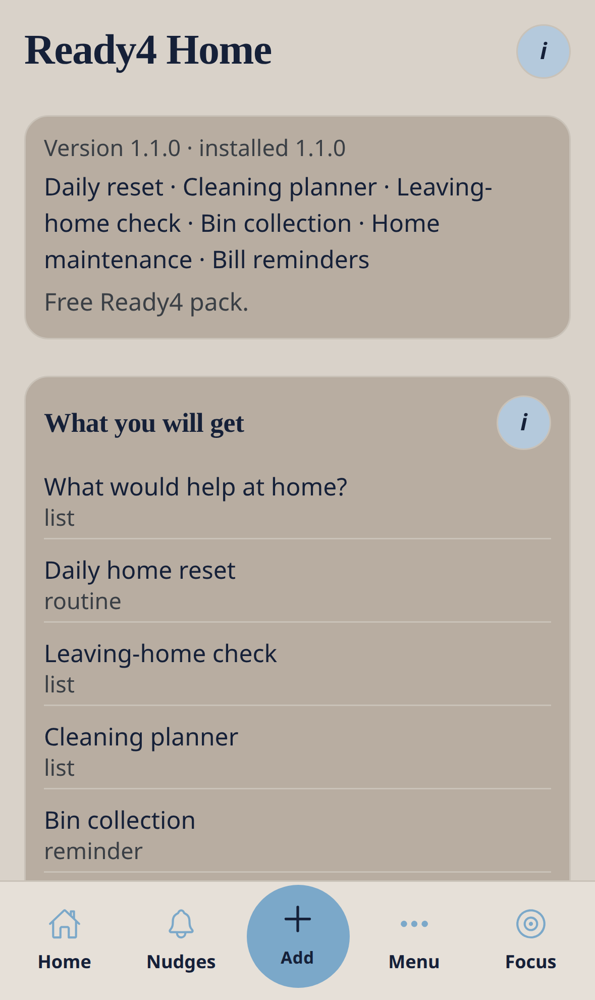
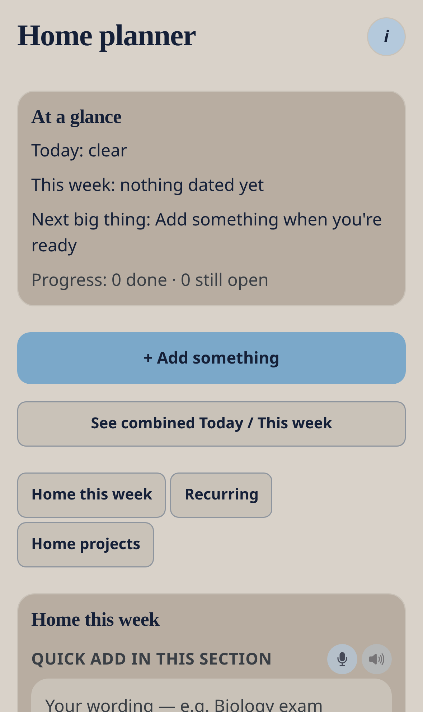

Free — included with the app
Ready4 Home
Calm home routines — daily reset, cleaning, bins, maintenance and bills — without overwhelm.
Nudge me Ready v3 · 0.3.1 · Ready4 pack · Data stays on this phone
What this pack is for
Daily reset · Cleaning planner · Leaving-home check · Bin collection · Home maintenance · Bill reminders
How to find it
- Open Menu → Ready4Packs (or Home → Explore).
- Open Ready4 Home.
- Read the preview, then tap install. On TestFlight you will not be charged if billing is off.
- Editable items appear in Nudges and What’s coming up.


What you will get
Everything stays editable. Skip, snooze or remove without penalty.
| Template | Type | Notes |
|---|---|---|
| What would help at home? | list | Pick one. Rest counts. Open that tool next. |
| Daily home reset | routine | Keep it short. One or two steps still count. |
| Leaving-home check | list | Edit to match your day. |
| Cleaning planner | list | Room by room — skip what does not need doing. |
| Bin collection | reminder | Edit the day to match your collection. Put bins out the night before if that helps. |
| Home maintenance checklist | list | A gentle quarterly glance. Edit freely. |
| Household bills glance | list | Organisational only — not financial advice. |
Everyday workflow
- Install the pack once.
- Open a template from Nudges and change the title, day or checklist to match your life.
- Use Later, Sorted, Smaller or Ask on the list.
- From Add, use the extra pack actions if you need a new item in this area.
- Open the pack planner (Home pack tile, or Menu if shown) for today / this week in this pack.
- Optional: turn on Push so dated items can nudge the lock screen.

What Add shows after install
These choices appear under the six everyday paths only after this pack is installed.
| Path | Extra action |
|---|---|
| Do it | 10-minute home reset |
| Do it | Cleaning planner |
| Remember it | Bin day |
| Remember it | Home maintenance |
| Buy & pay | Household bills |
Kind actions
Later, Sorted, Smaller, Ask, skip and remove never shame you. Progress over perfection.
Remove the pack
From the pack preview you can remove unedited items only, or everything from this pack. Unrelated nudges stay.